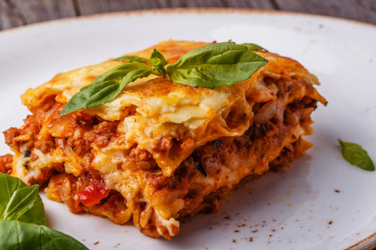

Lasagna

About the Recipe
This classic lasagna recipe is the perfect comfort food for any occasion. Packed with layers of rich, savory meat sauce, creamy ricotta cheese, and perfectly melted mozzarella, it’s a dish that will satisfy your cravings and leave everyone asking for seconds. Whether you're hosting a family dinner, meal prepping for the week, or just looking to indulge in a delicious homemade dish, this lasagna is a crowd-pleaser.
Made with simple, high-quality ingredients and a blend of Italian herbs and spices, this recipe brings authentic flavors to your kitchen. It’s easy to follow, making it perfect for both beginners and experienced home cooks alike. Ready to make a dish that’s hearty, filling, and downright delicious? Let’s get started with this ultimate lasagna!
Ingredients
- Lasagna Noodles
- Ground Meat (beef, pork, turkey, etc.)
- Tomato Sauce
- Ricotta Cheese
- Mozzarella Cheese
- Parmesan Cheese
- Eggs
- Herbs and Seasonings (garlic, onion, oregano, basil, parsley, red pepper flakes)
- Olive Oil
Instructions
- Preheat the oven: Preheat your oven to 375°F (190°C).
- Cook the noodles: Cook the lasagna noodles according to the package directions. Drain and set aside.
- Prepare the meat sauce: In a large pan, heat olive oil over medium heat. Add the ground meat and cook until browned. Add the garlic, onion, oregano, basil, salt, and pepper. Stir in the tomato sauce and simmer for 10-15 minutes.
- Make the ricotta mixture: In a bowl, mix ricotta cheese with eggs, parsley, and half of the Parmesan cheese. Set aside.
- Assemble the lasagna: Spread a small amount of sauce on the bottom of a baking dish. Add a layer of noodles, then top with some of the ricotta mixture, followed by the meat sauce. Sprinkle with mozzarella and Parmesan cheese. Repeat the layers, finishing with a top layer of noodles, sauce, and cheese.
- Bake: Cover the baking dish with foil and bake for 30 minutes. Remove the foil and bake for an additional 10-15 minutes until the top is golden and bubbly.
- Cool and Serve: Let the lasagna cool for 10 minutes before cutting. Serve and enjoy!